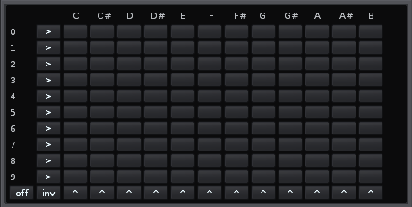
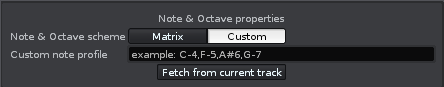
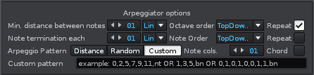
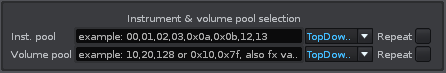
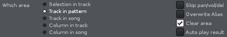
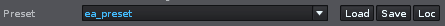
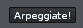

Epic Arpeggiator 2.0 Documentation
Thanks for installing my tool.
You are most likely here because you either want to know more detailed about the new functions, or you haven't used this tool before at all.
Well either case, sit back and relax. If the documentation fails to answer all your questions, then feel free to ask me some questions on the Renoise Forum or drop me a personal line (You have to be logged on though).
Regards,
Vincent Voois.
Version history:
2.00
-Added preset saving
-Added binary mode for arpeggiator scheme
-Fixed bug with double pattern checking
-Added check for track aliasses
-Converted routines to support new 2.8 effect commands
-Improved random scheme generation, had to limit random mode for the note and octave combination to make this work correctly though
-Fixed clearing mode. (apparently note_column:clear() no longer clears instrument and pan/vol/del columns)
Common Creative License applies to this tool.
If you feel the need to donate some kudos, then click the donation button, but you don't have to ofcourse.
My sincere thanks in advance if you do.
Note matrix

Vertical axis: Octave figures
Horizontal axis: Note selections
the arrowed buttons invert the state of all the buttons in the respective row or column they are pointing to.
[off] toggles all buttons off
[inf] inverts all buttons
Note & octave properties

The Custom note profile turns visible if the Custom button is selected. In that case, the Note matrix also disappears from the dialog as it is not applicable in that mode.
The custom note profile is a block of note phrases that should be literally written as they also appear in the pattern. Flag notes are not supported (Bb4 etc). It is being used for note blocks that the note matrix cannot support. (e.g. percussion kits and repeating notes or highly separated octave distances)
Fetch from current track: Gets the notes from the track and populates the custom note profile or the note matrix with the contents.
The fetcher routine does not detect repetitions in the patterns. If you want to fetch a limited block of notes, select the area that you want to have scanned and then select the "Selection in track" option in the lower left area of the dialog, then click the "Fetch from current track" button.
Arpeggiator options

Min. distance between notes: The amount of lines (line mode) that should be between two notes or two blocks (custom arpeggio profile if the 'bn' keyword closes the profile scheme). If delay (del) mode is selected, delay values appear on the second and higher note columns if present. (Delay mode only has an effect if the note columns is set to minimum of 2).
Note termination: On which line (line mode) to place a note-off or at which tick (tck mode) each note should be cut. the value is also used to separate note blocks from the custom arpeggio profile if the 'nt' keyword closes the profile scheme. take care the note termination is at least one figure lower than the distance figure else you won't see note off symbols when using line mode.
Arpeggio pattern: Distance -> Apply the distance between each note sequentially generated; Random - > Place notes randomly in the track, yet respect the distance and termination value; Custom -> Generate a note scheme using the block notation in the custom arpeggio pattern line.
Two modes are available with the custom option: Literal and binary mode:
Literal mode: With literal mode you setup the exact line positions a note has to be placed: 0,2,5,7 means a note is placed on line 00, 02, 05 and 07 after that, either the distance amount of lines ('bn') is used to separate the next block from the last one or the termination amount of lines ('nt') is used for that (depends on the termination keyword used for that) If no termination keyword is used then 'bn' is assumed and applied. Also the distance should always be set to lines if you want to
use the 'nt' spacing mode between blocks.
Binary mode: In binary mode, you define positions to be enabled or empty setting its value to 0 or 1. 0,2,5,7 would then look like: 1,0,1,0,0,1,0,1. the next block is directly pasted behind the previous block. If you want to add lines, simply set the distance amount of lines or add the amount of zeros behind the last 1. (It will automatically adjust the distance value). The termination keywords aren't applicable ('bn' or distance mode is always used here)
Note cols.:How much note columns should be used? If 2 or higher, the delay value can be applied.
Chord Mode: (Only appears if note cols is 2 or higher) If chord mode is checked, each row is filled until all note-columns are full, then the distance amount is applied. If it is unchecked, the distance amount of lines is applied after each generated note (in multi column mode you get shifted notes).
Rotation schemes
There are five rotation schemes for several options in Epic Arpeggiator. The octave rotation scheme only appears when the Note Matrix is present. The repeat option only appears when a cyclic scheme is selected (TdT and DtD).
TopDown - follow the scheme as the order is in the custom note profile or the note matrix.
DownTop - reverse the order
TopDownTop - Follow the scheme and then reverse the order behind it. If repeat is checked, the last note in the middle of the cycle is doubled so you have two notes in the middle, else you only have one.
DownTopDown - The opposite operation of the previous
Random - Pick a random note&octave/ins/velocity value from the scheme and post it in the pattern. (note and octave can not be seperately configured to deliver selected notes from the note matrix)
Instrument & volume pool selection

Inst. pool: Rotate through a set of different instruments with each note.
Volume pool: Rotate through different velocity values *and/or* volume column effects.
Both decimal as well as hexadecimal values are accepted as input here. Precede hex values with "0x" for the routine to detect hex values.
Area of generation

Selection in track: Apply the generation of the configured options to the selection in the current selected track or fetch notes from the selected area. (Take care that the selection *is* in fact in the current selected track!)
Track in pattern: generate notes across the track in the pattern
Track in song: generate the notes across the track in the whole song (Not supported when song contains repetetive patterns or selected track has aliassed tracks)
Column in track:Generate notes only for the current selected column in the current selected track.
Column in Song: Same as previous, though now for the song. (Also here, no support when repetitive patterns in the sequencer appear or when the selected track contains aliasses elsewhere)
Skip pan/vol/del: Existing values in the panning, volume and delay column are *not* overwritten if they contain any value.
Overwrite alias: When doing track in pattern, column in track or selection in track, if the track is an existing alias, there will be no generation and no warning. however if you know what you are doing and want the note scheme generated in the alias, then check this box and the scheme is generated.
Clear area: Clear target area before generating track data.
Auto play result: Play pattern after generation
Preset management

Load: load the current displaying preset in the drop-down (and/or repopulate the preset dropdown list if you have manually added a new preset file in the preset folder)
Save: Save the current configuration to a preset file. Opens a dialog where the current selected preset name is suggested, you can change the name however.
Loc: Display the location of the preset files so you can copy them elsewhere for distribution or add ones you got from someone else.

Simply execute the configured options!
Well, you have reached the end of the documentation.
Now start enjoy experimenting with Epic Arpeggiator!